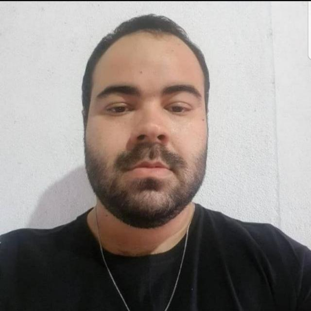

George Pim
Desenvolvedor Frontend Júnior


Sobre
Oi! Meu nome é George Pim, seja bem vindo(a)!
Sou uma pessoa apaixonada pela programação. Sempre tive o sonho de trabalhar com programação e atualmente comecei a colocar esse sonho em prática estudando HTML, CSS e JavaScript e cursando Análise e Desenvolvimento de Sistemas. Diferente de muitos Devs não sou fã de café, e meus principais hobbies são jogar Call of Duty Mobile e League of Legends Wild Rift, ver séries, desenhos e futebol.